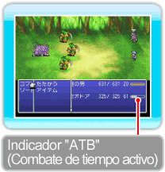

20 |
Cómo luchar |
 |
|

Cuando te encuentres con un enemigo (ya sea en el mapa del terreno o como parte de la historia), el juego pasará a la pantalla de combate. Durante la lucha, el tiempo transcurre sin detenerse, así que, cuando el indicador "ATB" (Combate de tiempo activo) de un personaje alcance su máximo, llegará su turno. ● "Battle Commands" (Órdenes de combate)Usa este menú para dar órdenes de combate a tus personajes durante el combate (→ pág. 21). Si pones el modo de combate en Active (Activo), el tiempo seguirá transcurriendo mientras estés seleccionando las órdenes de combate (→ pág. 19).
● Orden de los turnosCuando dos o más personajes tengan llenos sus indicadores "ATB" (Combate de tiempo activo), pulsa ● Reglas de enfrentamientoGanas un combate si derrotas a todos los enemigos. En el caso de que todo el grupo muera o quede petrificado, terminará la partida. Acerca del indicador "ATB" (Combate de tiempo activo)El indicador "ATB" (Combate de tiempo activo) muestra la cantidad de tiempo que debe transcurrir antes de que pueda tener lugar un abanico de acciones. No sólo indica el tiempo que queda para que un personaje pueda elegir una orden de combate, sino que también muestra el que hay que esperar para poder realizar habilidades, maniobras o algunas acciones más.

● Cuando llegue la hora de salir corriendo...Mantén pulsado

● Fin del combateCuando venzas en un combate, ganarás puntos de experiencia y guiles, así como objetos y otros tesoros en determinados lugares.
|

 |
 |
 |